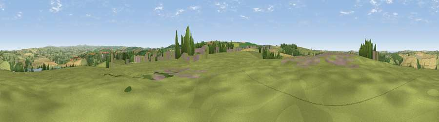

Viewpoint near Whitecross
#11119 in England · top 25% of its area beats it · near WhitecrossThe view, rendered

A 360° render of this exact spot computed from the terrain model, tree cover and land cover — summer colours, afternoon light, calibrated against photographs of famous viewpoints. Real trees, hedges and buildings will differ in detail.
The panorama
Grey silhouette: terrain skyline in each direction (720 bearings, Earth curvature and refraction included). Dashed green: skyline with trees (+15 m) and buildings (+8 m) as obstacles. Blue strip: how far the ground is visible on each bearing.
Where the view opens
Wedge length = distance to the farthest visible ground on that bearing (vegetation-aware). Rings at 10, 25 and 50 km.
What fills the view
61% grassland · 25% cropland · 9% woodland · 3% built-up · 1% water ·
Angular shares of the visible panorama (visual magnitude), not map area. Landscape diversity 0.46 (0–1 Shannon).
Key numbers
More beautiful places nearby
The staircase of upgrades: each row has a higher view potential than everything closer. Driving times are estimates from straight-line distance, calibrated against real road routing — check an actual route before setting out.
| Place | Direction | Drive | Score |
|---|---|---|---|
| Viewpoint near St Issey | WSW · 2 km | ~5 min | 70.3 |
| St Breock Beacon | S · 4 km | ~10 min | 74.5 |
| Viewpoint near Port Isaac | NNE · 7 km | ~14 min | 77.8 |
| Viewpoint near St Eval | SW · 8 km | ~17 min | 78.3 |
| Viewpoint near Port Isaac | NE · 10 km | ~19 min | 79.7 |
| Viewpoint near Roche | S · 15 km | ~27 min | 80.9 |
| Viewpoint near Stenalees | SSE · 16 km | ~28 min | 88.0 |
| Viewpoint near Crackington Haven | NE · 27 km | ~43 min | 88.1 |
50.51887, -4.87098 · source: screening · position refined by local search. Computed location — check access rights before visiting.